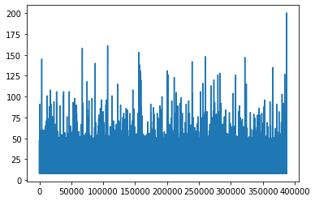

#hide
from IPython.display import Image, display
dest = '/Users/vinay/fastrl/images/'Deep Reinforcement Learning - Practice
ml
rl
Introduction
Let’s start with humans learning from experience.Say we are trying to learn to bicycle. We are driven by a goal to stay balanced and pedal.Along the way we fall.Now we need to start again.Somewhere in the gap between each iteration,we are learning and improving.Let’s hash out the features of this process,if we are to model this :
- Past actions influence future output: There is no immediate feedback.Each micro-action(exerting more pressure on the pedal,..) along the way either leads to falling-off balance or keep moving.
Computational Problem : How to assign credit to actions when they are not temporally connected ?
- Outcomes might not be deterministic: There are features of the environment(road,weather etc) that we do not fully understand that can effect outcome of the action.
Computational Problem: How to make inference about the properties of a system under uncertainity ?
Since out of the above two the latter seems to be simpler,let’s start by building our intuition about Non-deterministic systems : Let’s say we are given a Non-deterministic system whose properties we are unaware of but can only query it.How can we build our knowledge about the properties of this system ? Can we come up with a systematic way(algorithm) to estimate it’s properties ?
#hide
import matplotlib.pyplot as plt
import torch
def query(): return torch.randn(1).item()*10
query(),query(),query() #Fires different measurements each time.(1.830642819404602, -18.865480422973633, 0.9646076709032059)Now to understand about any of the properties of this ‘query’,we need to start with making some assumptions - say the numbers are coming from some unknown distribution with some stable(constant) mean. Let’s start estimating this.
Note:
How will your estimate of this mean change with each query ?
How does your confidence on this mean change with increasing number of queries \(n\) ?
def estimate_mean(n):
"""Returns list of estimated means after each query repeated for n times."""
list_n = [] # keep track of all the outputs from our slot machine
list_mean = [] # collect the means after every sample.
for i in range(n):
out = query()
list_n.append(out)
list_mean.append(sum(list_n)/len(list_n))
return list_mean Now let’s say after each query we update our estimate of running mean.
estimate_mean(10) # The list of estimates for n = 1...10[-3.2570073008537292,
2.4307329952716827,
-3.6120274662971497,
-6.871547028422356,
-6.159279823303223,
-2.986470659573873,
-2.4990574217268398,
-1.9037501001730561,
-2.7559810421533055,
-1.0134802050888538]#let's plot these means
list_means = estimate_mean(100)
plt.hist(list_means)(array([ 1., 0., 1., 32., 59., 4., 2., 0., 0., 1.]),
array([-4.82607206, -3.65700102, -2.48792998, -1.31885894, -0.1497879 ,
1.01928314, 2.18835417, 3.35742521, 4.52649625, 5.69556729,
6.86463833]),
<a list of 10 Patch objects>)We can see that the calculated mean vary a lot but seem to be closer to \(0\) most often..But how does our estimate itself depend on \(n\)(number of queries) ?
#let's measure the stability of our estimates by taking the difference of each successive estimates.
diff_means = [list_means[i]-list_means[i-1] for i in range(1,len(list_means))]
plt.plot(diff_means)Our estimate of the mean don’t seem to change much after a while.This is interesting.This aligns with our intuition - with more samples, we can be more confident.We can even go about proclaiming that whatever the dynamics of the system it’s mean might be constant ?
Important: Remember this insight..for any system with
stable meanwe can be sure that after a while our estimate itself becomes stable.
Neural Nets with Q-LEARNING
Reference : Playing Atari with Deep Reinforcement Learning
Key Questions :
1.Can we use neural nets in RL setting where the observations are correlated and Non-stationary(non-iid) ?
solution : Experiance Replay
Context
#hide
psuedo_code = Image(dest+'Screenshot 2020-02-21 at 12.28.01 PM.png')The key algorithm introduced in the paper is summarized below but we need necessary context before naively implementing it. Let us start with our knowledge of using Deep Nets in Supervised setting, and try to formulate the problem in similar context :
From each state the agent encounters we want the agent to output a probability distribution over all possible actions, which when sampled from results in optimal return. So, if we can have access to the labels(optimal actions) from each state we can easily create a loss function and proceed with SGD over all the states.
Here’s a simple approach for bootstrapping the labels:
Play the episode multiple times.
Record the returns
Choose the episodes with highest return. These might be the ones that the agent chanced upon good actions,so train on them.
Cross-Entropy method
Here’s how the environment looks like:
youtube: https://youtu.be/Qk61tqRrj0E
import gym
import torch
import numpy as np
env_name = "CartPole-v0"
env = gym.make(env_name)
def moving_average(x, w):
return np.convolve(x, np.ones(w), 'valid') / wHere we will use gym’s cartpole environment. Let’s quickly check the average return under random actions.
#collapse-show
def play_episode(env,obs_acts,sampler):
ob = env.reset()
done = False
rewards = 0
while not done:
acts = obs_acts(ob)
actn = sampler(acts)
next_obs, reward,done, _ = env.step(actn)
rewards += reward
ob = next_obs
return rewards
Average return for 1000 episodes
np.mean([play_episode(env,lambda x : env.action_space.n,np.random.choice) for i in range(1000)])22.295Now that’s the average return of a policy taking random actions at each state. In previous section, we have seen how properties of any distributin can be estimated in a step-wise manner,with each interaction resulting in more accurate estimate. But, here the reward from the environment depends on our actions(In this case moving left and right) at each state,with each action resulting in a different mean reward. Our task is to learn this mean reward corresponding to each action at a given state.
#collapse-show
import torch
import torch.nn as nn
obs_size = env.observation_space.shape[0]
hidden_size = 128
n_actions = env.action_space.n
net = nn.Sequential(nn.Linear(obs_size, hidden_size),
nn.ReLU(),
nn.Linear(hidden_size, n_actions))# Bootsrapping with the cross-entropy loss of best episodes.
from collections import namedtuple
import torch.optim as optim
obs_size = env.observation_space.shape[0]
hidden_size = 128
n_actions = env.action_space.n
sft_max = nn.Softmax(dim=1)
net = nn.Sequential(nn.Linear(obs_size, hidden_size),
nn.ReLU(),
nn.Linear(hidden_size, n_actions))
def train(net,data,loss,optmizer):
optimizer.zero_grad()
keys,labels = data
pred_vals = net(keys)
loss_v = loss(pred_vals,labels)
print(f'loss before update {loss_v.item()}')
loss_v.backward()
optimizer.step()
print(f'loss after update {loss(net(keys),labels).item()}')
def categorical_sampler():
def sampler(probs):
return np.random.choice(len(probs),p=probs)
return sampler
def play_episode(env,net,sampler):
episode_step = namedtuple('episode_step',field_names=['obs','actn'])
lis_steps = []
episode = namedtuple('episode',field_names=['tot_return','lis_steps'])
ob = env.reset()
done = False
rewards = 0
while not done:
acts = sft_max(net(torch.FloatTensor([ob])))
#import pdb;pdb.set_trace()
actn = sampler(acts.data.numpy()[0])
lis_steps.append(episode_step(ob,actn))
next_obs, reward,done, _ = env.step(actn)
rewards += reward
ob = next_obs
return episode(rewards,lis_steps)
batch_size = 20
percentile = 75
sampler = categorical_sampler()
def get_batch(env,net,batch_size,sampler):
batch = []
while len(batch) < batch_size:
episode = play_episode(env,net,sampler)
batch.append(episode)
return batchbatch = get_batch(env,net,10,sampler)
lis_returns = list(map(lambda x: x.tot_return,batch))
np.mean(lis_returns)27.0Now,let’s train
#collapse-show
mean_returns = []
loss = nn.CrossEntropyLoss()
optimizer = optim.Adam(params=net.parameters(),lr=0.01)
while True:
batch = get_batch(env,net,10,sampler)
lis_returns = list(map(lambda x: x.tot_return,batch))
mean_return = np.mean(lis_returns)
mean_returns.append(mean_return)
ret_threshold = np.percentile(lis_returns,percentile)
obs = []
actns = []
filtered_episodes = filter(lambda x : x.tot_return >= ret_threshold,batch)
if mean_return > 199:
print('training complete')
break
else:
for episode in filtered_episodes:
obs.extend(list(map(lambda x: x.obs,episode.lis_steps)))
actns.extend(list(map(lambda x: x.actn,episode.lis_steps)))
print(f'{len(mean_returns)} mean return = {mean_return},threshold = {ret_threshold}')
train(net,(torch.FloatTensor(obs),torch.LongTensor(actns)),loss,optimizer)
import matplotlib.pyplot as plt
plt.plot(moving_average(mean_returns,10))It’s cool that a simple approach derived out of our intuition actually worked. Now let’s check the performance of the same algorithm on FrozenLake environment.
env_fl = gym.make('FrozenLake-v0')Home Work 1 :
Solve the above environment with the above method. For details of the environment refer FrozenLake
CrossEntropy Method : Why it Works ?
Due to the frequent use of CrossEntropy method in Supervised learning setting we have not spent time dealing with it’s formulation. Here’s the necessary deep dive :
Deep-Q Learning
Prerequisites
Psuedo-code
#hide_input
display(psuedo_code)Code
#collapse-show
from collections import deque
batch_size = 100
batch = deque([],batch_size)
min_batch_size = 30
env_name = "CartPole-v0"
env = gym.make(env_name)
obs_size = env.observation_space.shape[0]
hidden_size = 128
n_actions = env.action_space.n
epsilon = 0.2
net = nn.Sequential(nn.Linear(obs_size, hidden_size),
nn.ReLU(),
nn.Linear(hidden_size, n_actions))
def e_greedy_sampler(epsilon):
def sampler(qf):
nped_qf = qf.detach().numpy().squeeze()
if np.random.uniform(0,1) <= epsilon:
return np.random.choice(len(nped_qf))
else:
return np.argmax(nped_qf)
return sampler
def get_pred_q(episode,gamma=0.99):
rewards = [step.r for step in episode]
pred_q = [step.qa for step in episode]
#appending '0' for terminal state.
pred_q.append(np.array(0))
labels = []
for i in range(len(rewards)):
labels.append(rewards[i]+gamma*pred_q[i+1].max().item())
return labels
class QAgent():
def __init__(self,net):
self.net = net
def act(self,ob,fn = lambda x: x):
return fn(self.net(ob))
def train(self,data,optimizer,loss_type ='squared'):
q_actions = []
actions = []
labels = []
for step,label in data:
labels.append(label)
q_actions.append(step.qa)
actions.append([step.a])
q_tensor = torch.cat(q_actions,0)
a_tensor = torch.tensor(actions)
labels_tensor = torch.tensor(labels)
q_actions_taken = torch.gather(q_tensor,1,a_tensor)
if loss_type == 'squared':
loss = nn.MSELoss()
loss = loss(q_actions_taken.squeeze(-1),labels_tensor)
#print(f'loss:{loss}')
loss.backward(retain_graph=True)
optimizer.step()
agent = QAgent(net) # The same network we used in cross-entropy method.
#change our previous play_episode to store (ob,a,q,r,next_ob)
def play_episode(agent,env,sampler,n_steps=1):
epi_step = namedtuple('epi_step',field_names=['ob','a','qa','r'])
episode = []
pred_q = []
tot_return = 0
ob = env.reset()
done = False
while not done:
qf = agent.act(torch.FloatTensor([ob]))
action = sampler(qf)
#import pdb;pdb.set_trace()
next_ob,r,done,_ = env.step(action)
tot_return += r
episode.append(epi_step(ob,action,qf,r))
ob = next_ob
pred_q = get_pred_q(episode)
return tot_return,[(episode_step,pred_q[i]) for i,episode_step in enumerate(episode)]
sampler = e_greedy_sampler(epsilon)
optimizer = optim.Adam(params=net.parameters(),lr=0.01)
threshold = 199
def train(sampler,optimizer,threshold,agent,env):
return_vals = []
counter = 0
while True:
episodic_ret,lis_step_label = play_episode(agent,env,sampler,n_steps=1)
counter += 1
return_vals.append(episodic_ret)
#print(f'{counter} return == {episodic_ret}')
if episodic_ret > threshold:
#print('solved.')
break
batch.extend(lis_step_label)
if len(batch) > min_batch_size:
idx = np.random.choice(len(batch),min_batch_size)
optimizer.zero_grad()
loss = agent.train([batch[id] for id in idx],optimizer,loss_type='squared')
return return_vals
return_vals = train(sampler,optimizer,threshold,agent,env)
plt.plot(return_vals)That took about 700 episodes and there’s almost no general trend.Let’s see if could replicate :
# Run this when you got lot of free time.
lis_return_vals = []
for i in range(20):
net = nn.Sequential(nn.Linear(obs_size, hidden_size),
nn.ReLU(),
nn.Linear(hidden_size, n_actions))
agent = QAgent(net)
lis_return_vals.append(train(sampler,optimizer,threshold,agent,env))#but here's a sample plot :
plt.plot(lis_return_vals[0])
Home Work 2 :
Though we seem to have solved the environment,the training(episodic rewards) process seems too unstable. 1. Can you make it stable ? 2. List some of the possible reasons for instability ?
Bag of Tricks :
Tip: SOME OBVIOUS TECHNIQUES
In our implementation of Deep-Q learning agent we have kept epsilon constant throughout the training. We can anneal it towards a lower value as the training proceeds.
Our update was Q(i) = r(i) + gammaQ(i+1) . So after every batch of episodes(after the update) we would expect our Q(i)’s closer to the labels (r(i) + gammaQ(i+1)) but due to the proximity of Q(i) and Q(i+1) updating Q(i) also changes Q(i+1). Unlike supervised setting, our labels here are a not constant,thus introducing instability in training.We can keep our labels constant for a couple of batches ( by storing the weights and using them to produce labels).
Well, DeepMind pushed this a whole lot further by adding several other techniques in this paper :
Rainbow: Combining Improvements in Deep Reinforcement Learning